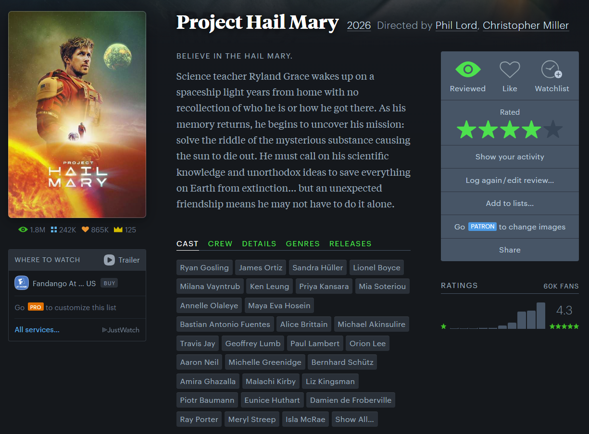
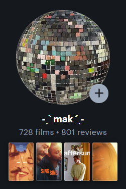
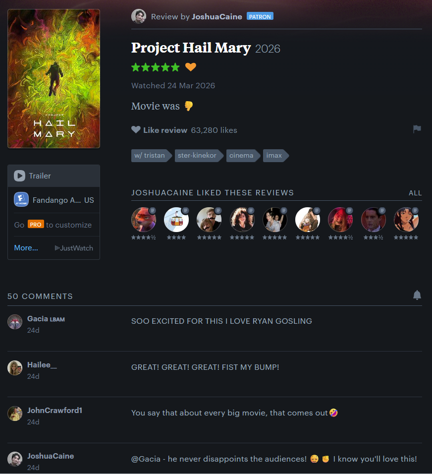
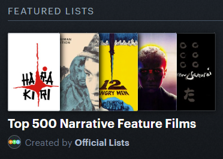
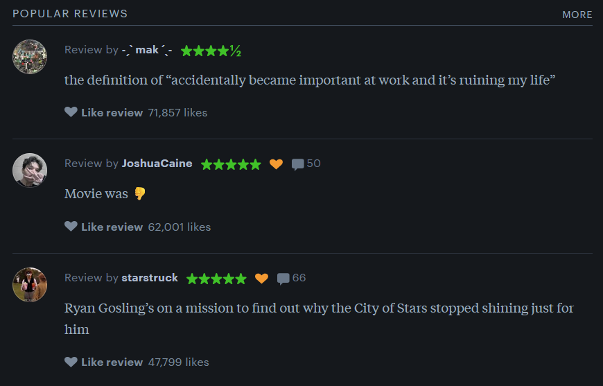
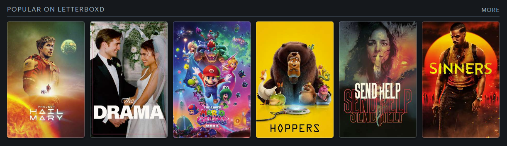

Letterboxd is an online social cataloging service for film. It was founded by Matthew Buchanan and Karl von Randow in 2011. Members can rate and review films, keep track of which ones they have seen in the past and when, make lists of films, showcase their favorites, tag films using text keywords, and interact with other users. It has been described as "Goodreads for movies."
The website has been majority owned by the Canadian investment company Tiny since 2023 and is headquartered in New Zealand. It has over 17 million registered users as of 2024. Although the website is generally limited to films, its leadership intends to add television shows in the future.
The name "Letterboxd" is based on the term letterboxing, the practice of placing black bars on the edges of a screen to preserve a movie's original aspect ratio.
Anyone can read content on the site!
But you need an account to do ALL of the following things.

It’s more than just a film tracker, its a community of film watchers.
You can build your identity through your film taste, participate in film discussion, and engage with friends or other film enthusiasts!



*only with paid membership
Letterboxd has a reputation for attracting cinephiles and members of Film Twitter. An internal survey conducted in 2022 showed that Letterboxd users, on average, watched more movies and spent more money on movies than general moviegoers.

"What rises to the top of the site's page for most popular reviews ranges wildly: there are obscure memes, diaristic essays and sprawling screeds packed with pseudo-academic jargon"
"...the lack of rules or structure can also lead to some interesting, unconventional criticism, and offers a platform to voices that might otherwise not be heard."
- The New York Times
It has been praised for its comparative and competitive pressure as well as its role in:
"the safest space for film discussion we've got"
- Scott Tobias, film critic

In recent years, several notable members of the film industry have joined the site. When actress Iman Vellani was cast as Kamala Khan in Ms. Marvel, fans quickly found her Letterboxd account and some of her reviews went viral, particularly her review of Captain Marvel. Director Martin Scorsese opened a Letterboxd account in October 2023 and quickly became the most-followed user on the site.
A number of film-related organizations and companies have also established an official presence on Letterboxd. This includes film distributors such as Paramount Pictures, Sony Pictures, Lionsgate, NEON, and The Criterion Collection, as well as the streaming service MUBI, prominent film festival organizers like the Cannes Film Festival, and the Academy of Motion Picture Arts and Sciences, which announced a formal partnership with the platform in 2023. These accounts often share curated film lists and news. Letterboxd's editorial team also frequently interviews Hollywood celebrities about their four favorite films, based on the Letterboxd feature that allows users to publicly display their own favorite movies on their user profiles. Letterboxd's YouTube channel houses over 500 videos featuring celebrities like Jack Lowden, Bowen Yang, Scott Speedman, Auli’i Cravalho, Jenny Slate, Michelle Yeoh, Jamie Lee Curtis, Daisy Edgar-Jones, Sebastian Stan, and others sharing their four favorite films.